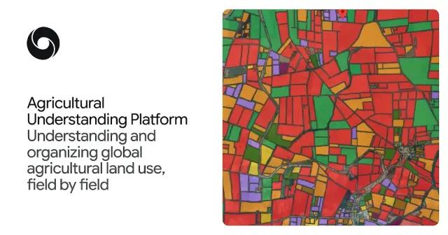

Google DeepMind、衛星画像AIで農地を可視化！日本対応の「Agricultural Understanding Platform」が農業データ活用を変える

Google DeepMindは、衛星画像とAIを活用して農地の境界、作物の種類、栽培時期などを解析する「Agricultural Understanding Platform」を公開しています。日本を含むアジア・アフリカの計11カ国に対応し、農地単位の詳細なデータを農業政策、精密農業、食料安全保障に活用することを目指しています。
記事で取り上げている点
- 2つのAIモデルで農地を解析
- 1. ALU：農地の形状と周辺環境を把握
- 2. AMED：作物と栽培サイクルを監視
- 日本も対応、APIによるシステム連携が可能
- 農業DXと食料安全保障への影響
- 今後の展望
一次情報（出典） deepmind.google